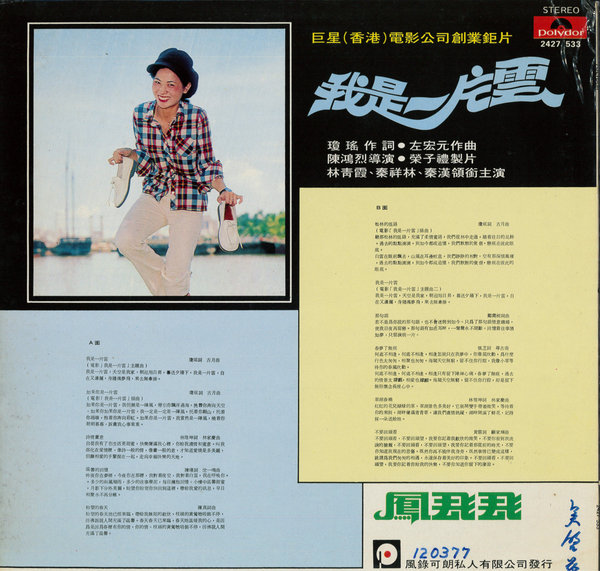
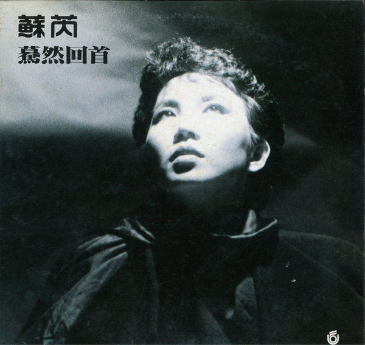

PASMA: the dataset
Backstage credits of 1,122 Taiwanese vinyl records, 1957–1991, reconstructed from their liner notes.
PASMA stands for the Private Archive of Scanned Music Artifacts. It is not a catalogue of songs or artists but a record of who did what on which album: 3,688 persons and institutions, each linked to albums with classified roles and release years. This page documents how it was built and what it does and does not contain. The data themselves are available to researchers on request (see Access).
Source and scope


Scans: private collection of Pei-Ju Lin, Sounds Good, Taipei. Reduced here so that the credits cannot be read; they illustrate the layout, not the data.
The scans come from a single private collection in Taipei. From several thousand scanned sleeves we retained the 1,122 Taiwanese popular-music records issued between 1957 and 1991 whose liner notes name backstage workers in a usable way. Records that credit only the singer and the label carry no information about collaboration and were excluded; so were non-Taiwanese releases (jazz, Western pop, Japanese, classical, soundtracks) that the collection also holds. Liner notes of this period credited arrangers, session musicians, recording engineers and producers with varying but often remarkable detail, and had never been systematically digitized.
The pipeline

A “role” is the credited function that a person or institution performed in relation to a specific album: arrangement, recording, performance, production, design, release, and so on. The reconstruction runs in 5 stages, each assisted by a large language model and each checked by a domain expert.
- OCR with LLM post-correction. Liner notes combine several scripts (traditional Chinese, Japanese, English), orientations and typefaces, on which conventional OCR engines perform poorly. Raw OCR output is post-corrected by an LLM that resolves character-recognition errors from the surrounding linguistic context.
- Credit extraction. The corrected text is free-form prose, not tabular metadata. An LLM parses it into triples of (person or institution, role, album).
- Year cross-check. Release years are cross-checked across multiple sources (the sleeve, catalogue numbers, library and discographic databases) to resolve inconsistencies.
- Entity disambiguation. Variant spellings, pen names, nicknames and inconsistent transliterations across scripts are reconciled to one identifier per person or institution. This is the most error-prone step, and the one that received the most expert attention.
- Role classification. Heterogeneous role labels as printed (“編曲”, “Arranged by”, “弦樂編寫”, “鼓”, “錄音”, “監製”, “封面設計” and hundreds of variants) are classified into a controlled vocabulary of 15 person-role and 5 institution-type categories.
Multiple LLMs from different families, both API-accessed and locally hosted, were used at different stages over the period of development; no single fixed model was used throughout. All LLM output was subject to the validation procedure below, and the authors take responsibility for the resulting dataset.
Role taxonomy
The 15 person-role categories, with the functional groups used for colouring the network figures:
| Code | Category (English) | 中文 | Group |
|---|---|---|---|
| 01 | Vocalist | 演唱 | Performance |
| 02 | Popular instrumentalist (guitar, bass, drums, keyboards, brass and reeds in pop ensembles) | 熱門音樂樂器演奏 | Performance |
| 03 | Classical or traditional instrumentalist (strings, orchestral and Chinese instruments) | 古典／傳統樂器演奏 | Performance |
| 04 | Computer and MIDI programming | 電腦／MIDI | Technical and production |
| 05 | Arranger | 編曲 | Creation |
| 06 | Recording engineer (recording, mixing, mastering, studio technical staff) | 錄音室工程／技術 | Technical and production |
| 07 | Composer | 作曲 | Creation |
| 08 | Lyricist | 作詞 | Creation |
| 09 | Backing vocal (chorus, harmony vocals) | 和音相關 | Performance |
| 10 | Music administration (A&R, planning, executive roles) | 音樂行政 | Administration and visual |
| 11 | Visual design (cover art, photography, design) | 視覺設計 | Administration and visual |
| 12 | Producer | 製作人 | Technical and production |
| 13 | Non-functional description (a credit that names a person without a function, such as a dedication or thanks) | 非職能描述 | Unclassified |
| 14 | Conductor | 指揮 | Creation |
| 15 | Music director | 音樂指導 | Creation |
Two further labels exist in the data: 00 Performing artist (演出藝人), the artist named on the cover, which is kept separate from role 01 because the cover artist is the front-stage identity the credits are organized around; and Unknown, for credits whose function could not be determined. The network analysis in the paper excludes codes 10, 11, 13 and Unknown, so that the graph reflects musical collaboration.
The 5 institution types:
| Code | Type | 中文 |
|---|---|---|
| 1 | Recording studio | 錄音室 |
| 2 | Record label (production, distribution and label companies merged) | 唱片公司 |
| 3 | Ensemble or band (any size or genre) | 樂團 |
| 4 | Other arts group (dance companies and similar) | 其他藝術團體 |
| 5 | Other institution (businesses, schools, government bodies) | 其他機構 |
Validation
The historical credits PASMA represents have no external ground truth against which automated accuracy could be computed. Validation therefore followed an iterative, expert-in-the-loop procedure rather than a single hold-out evaluation: repeated cycles of network visualization and correction, in which anomalies detected by domain expertise (a person in two roles that never co-occur, an engineer active before any studio existed, a label appearing as a person) were traced back to the source records and resolved. The expertise is that of the first author, a professional session guitarist with long experience in Taiwan's recording industry.
The trade-off is uneven coverage. High-degree and bridging nodes were densely scrutinized, because errors there would most distort the structural findings; peripheral nodes received less attention. Users of the data should treat the identity and roles of frequently credited actors as well verified, and those of actors credited once or twice as provisional.
Known limitations
- PASMA depends on the documentary practices of vinyl liner notes, which varied across labels and periods. Early credits, Taiwanese-language releases and small labels are under-documented; the absence of a credit is evidence about the industry, not a measurement of who played.
- The collection is one collector's holdings, strong in Mandarin pop of the 1970s and 1980s. Coverage of the 1950s and early 1960s is thinner.
- Release years cross-checked across sources are reliable to the year for most records but not all; reissues are a known source of noise.
- Role classification collapses hundreds of printed labels into 15 categories. The original label text is preserved in the data for users who need finer distinctions.
- The recordings analysed with MERT in the paper are a separate corpus (960 tracks, 1961–2016) identified through the Taiwan Popular Music Database and retrieved from online sources. PASMA contains no audio, and no audio is redistributed.
Access
PASMA is reconstructed from scans that a private collector shared with us for research. On the collector's terms, the scans, the OCR text and the credit data are not published for download, and this site does not expose them. We can share the credit data with researchers for non-commercial research. Write to us at hugowski@iis.sinica.edu.tw (or musik.hugowski@gmail.com) with a short description of the intended use. A research version in which personal and institutional names are replaced by stable identifiers is in preparation.
The network analysis code (sliding-window projection, clustering coefficient, largest component, Louvain modularity 1, Burt's constraint 2) uses standard NetworkX and igraph routines; the MERT and UMAP settings are given in the paper. The pipeline itself is not tied to Taiwan: it can be run on any archive of liner notes where backstage credits survive.
References
- Blondel, Vincent D., Guillaume, Jean-Loup, Lambiotte, Renaud and Lefebvre, Etienne (2008). Fast Unfolding of Communities in Large Networks. Journal of Statistical Mechanics: Theory and Experiment 2008(10): P10008.
- Burt, Ronald S. (1992). Structural Holes: The Social Structure of Competition. Cambridge, MA: Harvard University Press.